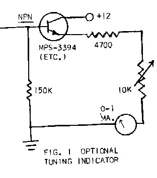
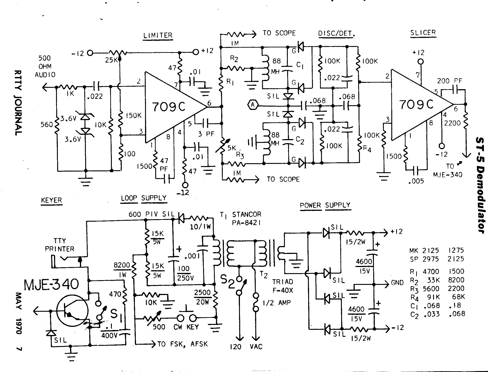

By IRVIN M. HOFF W6FFC - 1970
For some time a simple yet effective RTTY demodulator has been needed. The typical newcomer does not want to build a complex "best there is" sort of thing, yet the W2PAT unit in the ARRL HANDBOOK has long since been obsolete.
With the intention of providing something that will give excellent results on normal signals that could readily replace the W2PAT unit, the ST-S was designed.
BRIEF DESCRIPTION OF
THE ST-5
This unit uses a 709C linear integrated operational
amplifier ("op amp") for a limiter, and a second 709C
for a slicer (trigger) stage. It uses a Motorola MJE340 300-volt
transistor as a keyer to turn the printer from mark to space. It
offers the identical "floating loop" power supply that
we developed for the TT/L. It has a well—balanced linear
discriminator for 850 shift that gives the user the option of
normal 2 125—2975 tones for mark and space, or if he insists
on using ‘‘low" (non-standard) tones we have
included figures for 1275-2125 tones. It can quickly be adapted
to 170 shift although this is not shown on the basic diagram --
it will be explained in the text later. A
‘‘plus—plus" takeoff is provided for a tuning
meter, and scope points are shown if you wish to use a scope.
THE LIMITER
The 709C offers gain so fantastic it’s hard to
describe the potential performance available. Where something
like the TT/L offered perhaps 50 db. of limiting, the 709C offers
closer to 90 db. This would be comparable to raising the voltage
in the TT/L from say 23O to nearly 7500 volts! There are other
advantages as well, since this takes the place of three tubes and
two transformers; is all DC coupled; responds up to 10 MHz (which
puts the recovery time in the microsecond category); is
inexpensive and no larger than many transistors. It has a good
output swing of better than plus-minus 10 volts. With the circuit
shown, it will start to limit on a signal as low as 200
millivolts input level. A simple one-pole R/C high-pass filter is
included in the input to keep the 60 Hz. hum in the receiver
audio from reaching the limiter, thus some of the advantages of a
bandpass input filter are realized.
THE
DISCRIMINATOR/DETECTOR
With simple one-toroid per channel filters, it is rather
difficult to design a proper discriminator. A lot of problems are
inherent that most casual observers would not consider. Indeed,
when looking at the circuits offered by many designers, no
consideration at all appears to have been given some of these
areas. "Q" is dependent on frequency, and so is
impedance and output voltage. Bandwidth is dependent upon
"Q". To simplify the matters we can say that if you
merely put a capacitor across a 88 mh toroid, the bandwidth will
be too narrow to be useful in RTTY it will not be the same for
two different frequencies such as 2125—2975 (it will be
worse for 1275— 2125!) and the voltage developed across the
filter with a given input will be considerably different for the
two frequencies. Hence the designer has to take all these things
into account, and at the same time realize that the "total
area under the curve" affects the general noise balance as
well. Hence it is no simple matter to get a well—designed
linear discriminator that exhibits relatively equal bandwidth for
mark and space, has equal output voltages good linearity (proper
crossover) and reasonable noise immunity.
The detector stage on most demodulators is half-wave rectification, and on some units, voltage doublers are used, making the filtering problem even more difficult. The Mainline ST-series (ST-3, ST-4, etc.) use full—wave detection, which results in much less ripple and easier and more effective filtering.
THE LOW-PASS FILTER
Most simple demodulators do not offer any low pass
filtering at all. The best units have complex 3-pole Butterworth
minimum bandwidth filters that usually take a large and expensive
inductor plus an isolation stage at either end. The ST-S has a
single—pole R/C filter that does an adequate job of removing
the audio ripple from the DC keying signal.
THE SLICER
Another of the 709C op amps is used. Since we are now
dealing with DC signals instead of audio, you will notice
different ‘compensating networks" are shown at points
1—8 and 5—6. This slicer has so very much gain that a
signal variation as low as 1-2 Hz. will cause the keyer to switch
completely from mark to space. Shifts as small as 3—4 Hz.
then could easily be copied if the operator had a steady enough
hand!
THE KEYER
This is the identical keyer stage that will be used in
the deluxe ST-6. The MJE 340 is a 300-volt transistor costing
approximately $1. Although capable of handling power up to 25
watts, it is used here as a saturated switch that is either
"on" or ‘off". Even with a 60 mill, loop, the
keyer therefore pulls something like 0.012 watts in mark, due to
the very low saturated collector-emitter voltage of only 0.2
volts. Under normal circumstances, it is thus virtually
indestructible in RTTY use. It is cut off hard for space, by
negative voltage from the slicer. The diode at the base diverts
this excessive negative voltage to ground which keeps the
base-emitter junction from acting like a Zener diode when the
slicer goes to negative 10 volts.
A spike—absorbing network goes from collector-to—ground to reduce the "back EMF" caused by the selector magnet inductance as it switches from space back to mark.
THE LOOP SUPPLY
This is a similar concept to that we developed for the
TI /L. The resistor values are changed somewhat since the 6W6
vacuum tube in the TT/L acts like a switching resistor, while the
solid—state keyer in the ST—S acts more like a typical
switch. The FSK output point will supply a minus-plus voltage as
you switch from mark to space, thus it offers excellent
adaptability to various types of transmitters some of which need
"conduct-on-mark" instead of the normal
"conduct—on— space’’. If you are
upside-down" merely reverse the diode in your
transmitter’s keyer and it should then be normal. Few FSK
driver systems will offer this simple remedy, so don’t
expect this trick to work with demodulators other than the
Mainline types.
THE STANDBY SWITCH
Shorting the Standby switch 51 puts the printer into
mark configuration. The voltage across the switch contacts is
normally 0.2 volts for mark and perhaps 175 volts for space. This
is not alarming, the voltage across switch S2 is of course 120
VAC.
THE LOOP TRANSFORMER
Do not get excited if you find the rating of the Stancor
PA-8421 to be "only 50 ma." Once again we should point
out this does not apply to our use of the transformer. The high
voltage secondary of this transformer is rated on the basis of
the current in the primary, which is capable of supplying nearly
20 volt-amperes to the two secondary windings. Since the filament
winding is rated at 2 amps at 6.3 VAC, this leaves around 50
mills for the 125 VAC winding. However, if the filament winding
is not used the secondary can then take the entire 20
volt—amperes by itself, which would be some 150 mills. So do
not be alarmed at the ratings, you’ll never hurt the
transformer. As an example, I have had a similar transformer
running for six years at 24 hours per day in the TT/L and have
never experienced any difficulty nor do I expect to. As long as
you can hold your hand on any transformer, it’s usually not
too hot!
THE POWER SUPPLY
Practically any 24 volt center—tapped transformer
will work fine. The op amps can take up to plus-minus 18 volts on
them, so if you get anything from 10-18 volts plus-minus,
it’s fine. Regulation is not needed on this unit, and in
fact offers very little advantage, since you will be pulling the
same amount of current on both the plus and minus supplies. Any
change in the transformer will be reflected by an equal change up
or down on both supplies at the same time, and cancel out. The
voltage at the pin 3 of the limiter will not matter once
initially set for the nominal power supply output voltage. It is
only a few millivolts and a radical change in the power supply
voltage would have negligible effect, if any.
If the voltage is more than 15-16 volts, just increase the size of the 15 ohm resistors until it is what you want. This offers the possibility of any of a number of power transformers being suitable.
TUNING THE FILTERS
This has been discussed before a numher of times. For
the most accurate tuning, a counter or accurate audio generator
is needed. Otherwise, just put a 0.068 capacitor across a 88 mh
toroid and you’ll come out "close enough" to 2125.
although the exact right capacitance is 0.06374, assuming no
error in the capacitor value. Use Mylar capacitors, such as the
Sprague "Orange drop" as an example. The toroids are
connected in a normal "series’s manner with the middle
connection of the two windings grounded as shown. The values for
the capacitors shown in the table are quite accurate, and
assuming you have 10% capacitors, you should be close enough to
mark and space to be happy. Of course even at 1004, you can miss
it 100 cycles easily.
ADJUSTING THE ST-5
With no input signal or with the input grounded, put a
voltmeter at pin six of the limiter, or any place connected
directly to pin six, such as the one side of the 5K pot. This is
a very low impedance point so you need not use a VTVM for the
purpose. Any voltmeter will do. Adjust the 25K pot until you get
zero volts at pin six. If you cannot zero this adjustment,
you’d better write me a letter, you’ve done something
else wrong or ruined the op amp somehow.
Now put the voltmeter at point "A" or refer to the tuning meter which we will talk about a bit later in the text. Go from mark to space on the input and adjust the 5K pot until the meter reads a similar amount of voltage for both signals.
You are finished. Neither adjustment should need to be made again. The only other adjustment would be of the pot in the narrow shift CW identification system on the FSK output.
THE TUNING METER 
Fig. 1 shows a suitable 1 ma. meter used for tuning
purposes. You can also use any other voltmeter or
170 SHIFT
If you wish to occasionally copy "narrow
shift", add a 0.022 capacitor in series with a toggle switch
and put this combination across the space toroid. This
automatically will change the 2975 frequency to very close to
2295. However, the balance at point "A" will be upset
somewhat, and it is merely an expediency which will give
reasonably good 170 shift.
If using the 1275-2125 tones, you need to put two capacitors in parallel -- a 0.068 and a 0.0068, then put the switch in series with these two parallel capacitors and then put this combination across the space toroid. This changes the 2125 space frequency to about 1445. Again this is only an expediency, and does not give optimum filter balance, etc.
AUDIO INPUT
If your receiver does not have a 5OO ohm tap you can
hook the ST-5 directly across the speaker impedance. However, you
have automatically ‘thrown away about 20-25 db. potential
performance in the limiter. A better idea would be to get a voice
coil to 500 or 1000 ohm transformer. Inexpensive, imported
transformers are available for under $1. If you do hook directly
to the speaker tap, just be sure to run the receiver at least a
normal room volume.
COMPONENTS
The 709C op amps are available in a number of brands.
The best known is the Fairchild, but Signetics and Motorola have
them also. They vary (as of this writing) from $2.62 to $2.80
brand new, depending upon brand selected. Motorola are available
through Allied, Newark, etc. The other brands are a little harder
to find. Here are two addresses for the Fairchild for mail order.
G.S. MARSHALL CO.
732 No. Pastoria Avenue
Sunnyvale, California 94086
Hamilton Electro Sales
340 East Middlefield Road
Mountain View, California 94040
The item to ask for is the 709C op amp in the "TO-5" can. This is so much easier to work with than the 14-pin "dual inline" package. However both cost $2.65 currently. Send additional money, approximately $1 to cover packaging and mailing costs, plus sales tax if from California. If buying the Motorola, you need to get the "MC-1709C0" version, they are $2.80.
Several firms dealing with surplus semiconductor items such as advertise in ham magazines are selling the 709C for as low as $1.49 each. The ii mH toroids are available from advertisers in various ham magazines and in RTTY JOURNAL ads. The 4600 MFD. capacitors in the power supply are Sprague 36D462G015AA2A types at $2.31 each, but any large size 15V capacitors will work fine. We recommend at least 2000 Mfd.
The diodes marked: "G" are 1N270 Germanium, those marked ‘Sit" are most any silicon types. The 1N4816 or 1N2069 should be adequate (about 32 cents each) for anything other than the loop supply. There a 400 PIV should be used, or better, such as the 1N2070, etc. The Zener diodes in the limiter input can be replaced with two silicon diodes if cost is essential. In that event, do not put them in series as is shown for the Zeners, but put them in parallel, with one in reverse direction from the other. This is a protective device to keep the input on the op amp under the maximum allowed, which is around plus-or-minus 5 volts peak-to-peak. You can even leave the Zeners off entirely, but it is possible to ruin the op amp if you inadvertently tune the receiver quite loudly. It’s possible on some receivers to get as much as SO volts peak-to-peak at the 5OO ohm tap if the volume control is "wide open."
WIRING THE OP AMP
Looking at the bottom of the op amp where the wires come
out, you will see a small tab on the outer circumference. This
tab is opposite pin 8 of the op amp. Looking from the bottom, you
then go clockwise from there for the other pins. This is similar
to an octal plug for a vacuum tube.
WHAT’S MISSING
IN THE ST-5?
This is an elementary demodulator of few parts. Unlike
most simple units, it also offers a superb means of keying the
transmitter along with narrow shift CW identification.
The limiter section is equal to the very best. The discriminator section is equal to anything published and is comparable to that in the ST-3. The slicer is equal to anything published or likely to be published for some time to come. The keyer section is in the same category.
However, this unit does not have a deluxe low pass L/C 3-pole filter nor does it have a threshold corrector that would allow automatic copy on mark-only, etc. Thus, for something that can be quickly built at low cost and still do a good job as a simple demodulator, it should fit a needed vacancy on the RTTY operator’s table. One could not expect to design a suitable unit for much less money.
COST
The semi—conductors cost $6.36 total. The front
end, including semi-conductors, up to the collector of the
MJE-340 would cost about $14.50. This is using Mallory 39 cent
pots. The loop supply would be around $8, and the power supply
around $11. You can thus see that the power supplies are (as
always) a disproportionate part of the cost on a simple
demodulator.
It is interesting to note,
however, that these power supplies may be used to power other
solid—state devices as well as the ST-5, and in any event,
should you desire to later build a more complex unit, you would
use about 95% of the components already used in the ST-6 so it
would make an excellent building block for better things to come. 
THE ST-6
The Mainline ST-6 has already been designed. It is as
complex as this unit is "simple". It will be published
when we have time to do so and there is room for it. It uses 7 op
amps and 9 transistors, including two in the regulated power
supply. Practically everything in the ST-5 is used in the
ST—6, plus of course a great many more components as well.
That unit offers among other things autostart, antispace, an
"active" low—pass minimum bandwidth filter,
optional limiter-on/off switch, threshold corrector for single
channel copy and optional bandpass input filters for 170 and 8S0
shifts. If you were to assemble the parts for the ST—5, it
would be a marvelous introduction to the ST-6, later, and almost
all the parts would be used for the other unit. The ST-6 will be
the long-awaited solid-state replacement for the TT/L or TT/L-2.
Schematics are available now from the author for $1.